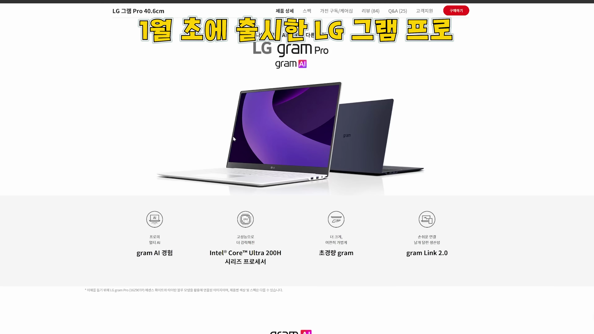
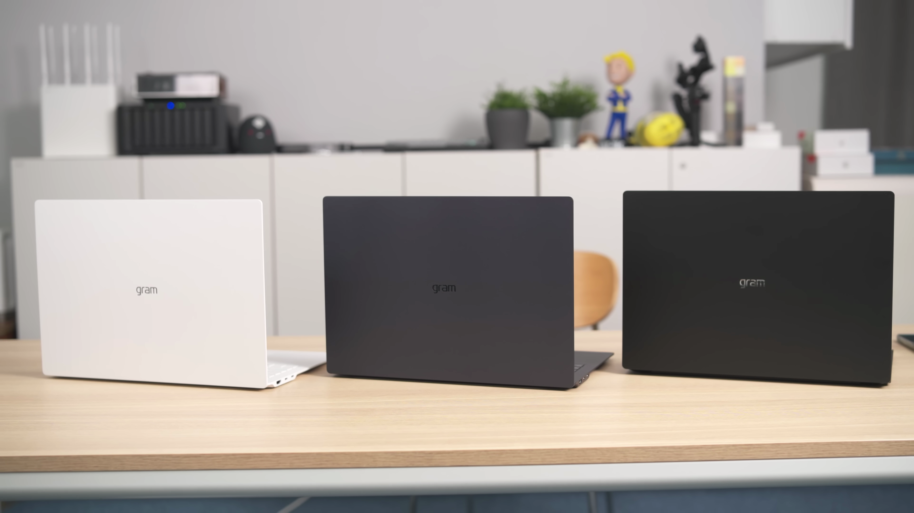
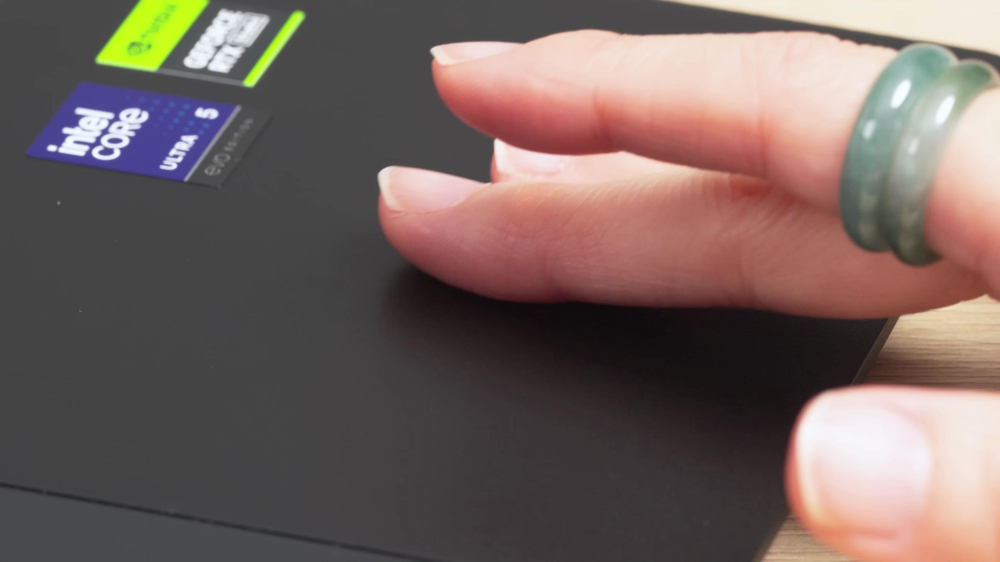
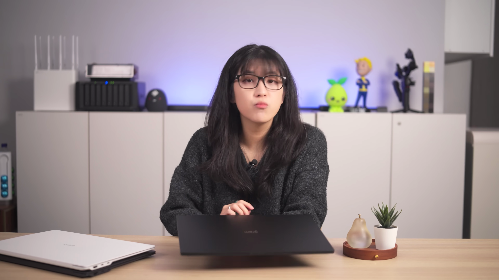
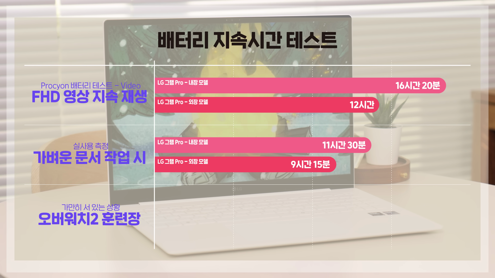
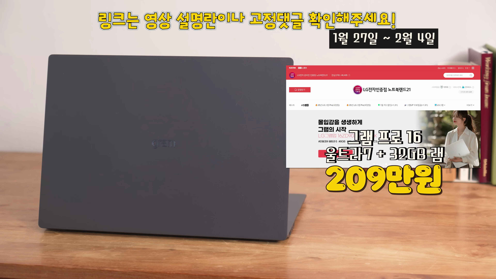

2025년형 LG 그램 프로 시리즈가 출시되었습니다. 다양한 제품군으로 소비자들은 어떤 모델을 선택해야 할지 고민이 많아질 텐데요. 이번 포스트에서는 내장 그래픽 모델과 외장 그래픽 모델의 차이점과 성능을 심층적으로 분석해 보겠습니다. 
LG 2025년형 그램 프로 출시
- 2025년형 LG 그램 프로 출시 소식
- 루나레이크 CPU, 애로우레이크 CPU로 나뉘어 출시
- 외장 그래픽 모델 RTX 출시 지연
2025년형 LG 그램 프로 시리즈가 출시되었으며, 루나레이크 CPU와 애로우레이크 CPU 기반 모델이 따로 나왔습니다. 외장 그래픽 모델인 RTX는 뒤늦게 출시되었습니다.

소비자의 고민
- 소비자들이 선택에 어려움을 겪는 상황
- 내장 그래픽과 외장 그래픽 모델의 차이점 필요
- 어떤 모델이 나에게 맞을지 확인하기
소비자들은 어떤 모델을 선택해야 할지의 고민이 깊어졌습니다. 내장 그래픽 모델과 외장 그래픽 모델 간의 차이를 이해할 필요가 있습니다.

2025년형 그램 프로 16인치 모델 비교
- 내장 그래픽 모델과 외장 그래픽 모델 비교
- 성능과 특징의 차이점
- LG 그램 프로의 특징과 장점
이번 포스트에서는 2025년형 그램 프로 16인치의 내장 그래픽 모델과 외장 그래픽 모델 두 가지를 비교하여 각 모델의 특징과 장점을 분석해 보겠습니다.

인텔 CPU 라인업 변화
- 복잡해진 인텔의 CPU 라인업
- 루나레이크와 애로우레이크의 차이
- AI 성능에 초점을 맞춘 루나레이크
올해의 인텔 CPU 라인업은 상당히 복잡해졌습니다. 루나레이크 CPU는 AI 성능에 중점을 두고 있으며, 애로우레이크는 다양한 전력 등급을 가진 정규 라인업으로 구성되어 있습니다.

삼성 그램 프로 모델의 사양
- 코어 울트라 5 225H 사양
- 내장 그래픽 ARC 130T.
- 엔비디아 RTX 4050 그래픽 모델
2025년형 그램 프로는 코어 울트라 5 225H 사양의 내장 그래픽 모델과 엔비디아 RTX 4050 그래픽이 탑재된 외장 모델로 나눠집니다.

그램 프로의 디자인
- 매끄러운 상판 재질 개선
- 새로운 색상 옵션 추가
- 화려한 마감 처리
그램 프로의 하우징 재질이 매끄럽게 개선되어 다양한 색상 옵션이 추가되었습니다. 소비자들은 이 새로운 디자인에 매력을 느낄 것입니다.

경량화 노트북의 특징
- 그램 시리즈의 경량화
- 내장과 외장 모델의 무게 차이
- 이전 모델과의 비교
LG 그램 프로는 가벼운 노트북을 지향합니다. 내장 모델은 약 1.15kg, 외장 모델은 약 1.3kg로 경량화된 특징을 가지고 있어 이동성이 뛰어납니다.

디스플레이 성능
- 2.8K OLED와 2.5K IPS 두 가지 옵션
- 각 디스플레이의 장단점
- 영화와 게임에서의 성능
- 일상 작업과 IPS의 장점
2025년형 LG 그램 프로는 두 가지 디스플레이 옵션이 제공됩니다. OLED는 영화 및 게임에 강하고, IPS는 문서 작업과 일반적인 사용에서 더 유리한 성능을 보여줍니다.

배터리 성능 비교
- 내장 모델과 외장 모델의 배터리 지속 시간
- FHD 비디오 연속 재생 시 성능 비교
- 게임 성능에 따른 배터리 소모
내장 모델이 배터리 지속력이 더 뛰어난 반면, 외장 모델은 RTX 4050 그래픽을 활용하여 전력 소모가 많아질 수 있습니다. 일상적인 작업에서는 내장 모델이 더 긴 배터리 성능을 보여줍니다.

가격과 판매 정보
- 기본 사양 모델 가격
- 울트라7 32GB 램 사양 가격
- G램 Pro 외장 모델 출시 지연
2025년형 LG 그램 프로 모델은 기본 사양 모델이 약 200만원 전후로 출시될 예정이며, 현재 일부 모델에서는 할인 판매가 진행되고 있습니다.

결론 및 추천
- 내장 그래픽 모델은 가벼운 작업에 적합
- 외장 모델은 고사양 작업을 처리할 수 있음
- 각각의 소비자 요구에 맞는 선택
내장 그래픽 모델은 일반적인 사무 작업에 적합하며, 외장 모델은 고사양 작업을 필요로 하는 사용자에게 추천됩니다. 최적의 선택을 할 수 있도록 성능과 가격을 고려해야 합니다.
Tags: #LG 그램 프로 #2025년형 노트북 #내장 그래픽 #외장 그래픽 #루나레이크 CPU #애로우레이크 CPU #노트북 리뷰 #성능 비교 #경량 노트북 #디스플레이 성능 #배터리 지속 시간